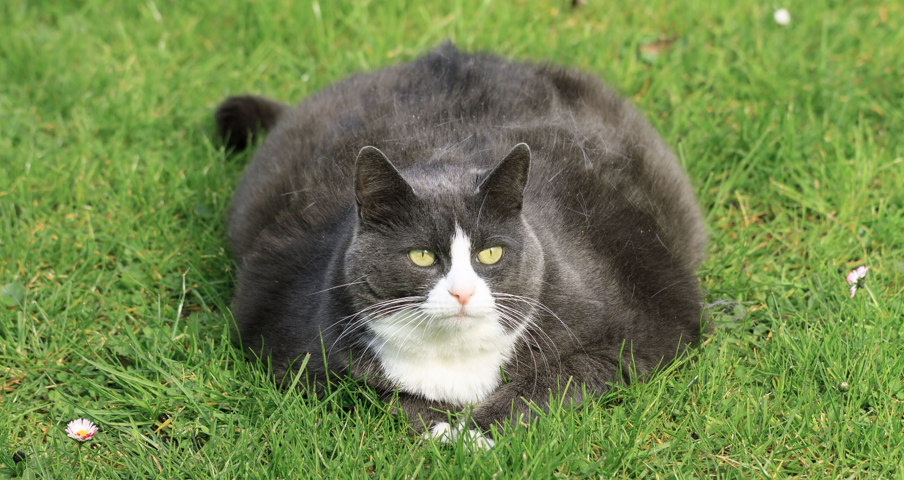

moje zadania
to bardzo wazny zwiazek chemiczny,bez niego nie ma zycia! jego wzor to H2O
- mieszko 1
- wladysklaw lokietek
- stanislaw august
| data | osoba | sprzedarz rano | sprzedaz popoludniu |
|---|---|---|---|
| 1.12.2022 | tomasz nowak | 1200 | |
| 2.12.2022 | piotr polak | 340 | 430 |
| jan kot | 230 | 260 | |
| 3.12.2022 | rafal foka | 760 | |
- doslownie samolot do spania,borading do snu,czyli udanie sie do odpoczynek.Uzywane czesto w odniesieniu do zwierzat,gdy ucinaja drzemke-wtedy mowimy,ze borading do spiolkolotu czyli szykuja do snu
